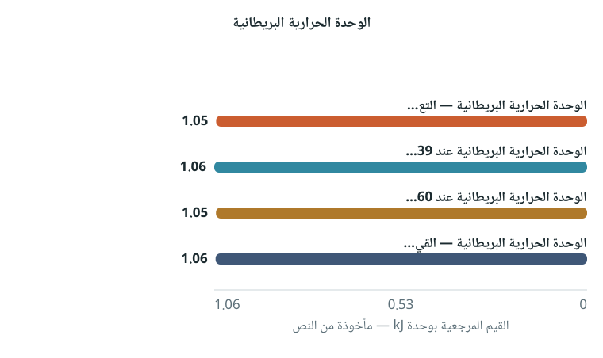

الوحدة الحرارية البريطانية
British Thermal Unit
وحدة طاقة حرارية غير دولية أصلها تسخين رطل من الماء درجة فهرنهايت واحدة؛ ولهذا ليست قيمة واحدة بل عائلة قيم بين 1054.350 و1059.67 J، وأشهرها تعريف IT بقيمة 1055.056 J.
الوحدة الحرارية البريطانية (Btu) وحدة طاقة حرارية خارج النظام الدولي، وأصلها كمية الحرارة اللازمة لرفع حرارة رطل من الماء درجة فهرنهايت واحدة. ولأن الحرارة النوعية للماء تتغير بالحرارة، تفرّع هذا الأصل إلى عائلة قيم، ويسجل NIST SP 811 منها: القيمة الكيميائية الحرارية 1054.350 J، وقيمة 39 °ف 1059.67 J، وقيمة 60 °ف 1054.68 J، والقيمة المتوسطة 1055.87 J، وقيمة IT المعتمدة في التجارة والهندسة 1055.056 J.
الفارق بين أعلاها وأدناها (1059.67 − 1054.350)/1054.350 = 0.5046%، وهو فارق حقيقي لا خطأ طباعي، ولهذا يجب تسمية التعريف عند التحويل. والتعريفان الشائعان IT والكيميائي الحراري يفترقان بنسبة (1055.056 − 1054.350)/1054.350 = 0.0669%، لأن كليهما 252 سعرة لكن بسعرتين مختلفتين: 4.1868 J للسعرة الدولية و4.184 J للسعرة الكيميائية الحرارية، وفرقهما (4.1868 − 4.184)/4.184 = 0.0670%.
التحويل العملي إلى الوحدات الدولية: كيلوواط ساعة واحد يساوي 3.6×10⁶ J، فيساوي 3 600 000/1055.056 = 3412.14 Btu بتعريف IT، أو 3 600 000/1054.350 = 3414.43 Btu بالتعريف الكيميائي الحراري. والقدرة تُقاس بالوحدة الحرارية في الساعة: 1055.056/3600 = 0.2930711 W لكل Btu/h، ويطابق ذلك ما يسجله NIST (2.930 711×10⁻¹). وطن التبريد 12 000 Btu/h = 12 000×0.2930711 = 3516.85 W، وهو الرقم نفسه الذي يورده NIST (3.516 853×10³ W).
الوحدة باقية في عقود التكييف وتقديرات الغاز في الولايات المتحدة، حيث يُحاسب الغاز بالسعر الحراري (therm): القيمة الأوروبية 1.055 06×10⁸ J أي 100 000 Btu بتعريف IT، والأمريكية القانونية 1.054 804×10⁸ J أي أقل بنسبة (1.05506 − 1.054804)/1.054804 = 0.0243%. ووجود قيمتين متجاورتين في السوق يعني أن تحويل الفاتورة بمعامل خاطئ يُنتج فرقًا بمقدار 0.07% فقط، لكن استعمال 3414 بدل 3412.14 في حساب قدرة يزيح التقدير بنسبة 0.067%، وهو ما يهم في المقارنات الضيقة لا في تقديرات الرتبة.
كيف تعمل الظاهرة؟
الوحدة نشأت من عملية تسخين: كمية الحرارة التي يكتسبها جسم تساوي كتلته في حرارته النوعية في فرق حرارته. فإذا كانت الكتلة رطلًا واحدًا من الماء وفرق الحرارة درجة فهرنهايت واحدة، كانت الكمية وحدة حرارية واحدة. والحرارة النوعية للماء ليست ثابتة: 4.184 J/(g·K) عند 15 °م و4.179 عند 25 °م و4.216 عند 100 °م، فكل نقطة بداية ونهاية للتسخين تعطي كمية مختلفة قليلًا، ومن هذا الاختلاف وُلدت قيم 39 °ف و60 °ف والمتوسط. وفي القرن العشرين ثُبّت التعريف صناعيًا على السعرة بدل الماء: 252 سعرة، فتفرّع التعريف إلى IT وكيميائي حراري تبعًا لتعريف السعرة المستعمل. فالوحدة ليست قياسًا فيزيائيًا واحدًا بل اتفاقية مُثبَّتة على اتفاقية أخرى.
العلاقة بالأرقام
الخطوات بالأرقام: (1) 1 Btu(IT) = 1055.056 J و1 Btu(th) = 1054.350 J من جدول NIST SP 811. (2) فارق التعريفين: (1055.056 − 1054.350)/1054.350 = 0.000669 أي 0.0669%، ويطابق فارق السعرتين (4.1868 − 4.184)/4.184 = 0.0670%. (3) أوسع انتشار في العائلة: (1059.67 − 1054.350)/1054.350 = 0.5046%. (4) كيلوواط ساعة إلى Btu: 3.6×10⁶/1055.056 = 3412.14 (IT)، و3.6×10⁶/1054.350 = 3414.43 (th)، والنسبة بين الرقمين 1.00067. (5) الوحدة الحرارية في الساعة إلى واط: 1055.056/3600 = 0.2930711 W (NIST: 2.930 711×10⁻¹). (6) طن تبريد: 12 000×0.2930711 = 3516.85 W (NIST: 3.516 853×10³ W). (7) سعر حراري: 100 000×1055.056 = 1.05506×10⁸ J = 105.506 MJ عند التعريف الأوروبي، وtherm (U.S.) = 1.054 804×10⁸ J أي أقل بـ0.0243%.
مفاهيم متقاربة
الخلط الأول: الوحدة الحرارية طاقة لا قدرة؛ كتابة «مكيف 18 000 وحدة» تعني 18 000 Btu/h، ولو حُسبت طاقة لصار الرقم بلا معنى زمني. الخلط الثاني: الوحدة الحرارية ليست الجول مضروبًا في ثابت واحد؛ العائلة تمتد 0.5%، فمن يستعمل 1055 وحدها يخطئ 0.4% في أطراف العائلة. الخلط الثالث: السعرة ليست السعرة الكيميائية الحراري؛ الفارق 0.067% يظهر في ميزانيات الطاقة الكيميائية. الخلط الرابع: السعر (therm) ليس وحدة حرارية واحدة بل 100 000 منها، ويُستعمل في فواتير الغاز فيقع الخلط بينه وبين الوحدة المفردة. الخلط الخامس: طن التبريد ليس كتلة بل معدل انتقال حرارة مقداره 12 000 Btu/h.
حدود التطبيق
الوحدة تفقد صلاحيتها كمرجع حين يُطلب الاتساق الدولي: كل حساب حراري في نشر علمي أو مواصفة دولية يُكتب بالجول والواط، والوحدة الحرارية تُذكر للتحويل فقط. وتفقد اليقين حين تُستعمل بلا تسمية تعريف، لأن الفارق 0.5% بين أطراف العائلة أكبر من هامش كثير من موازنات الطاقة. ولا تُستعمل في الحسابات التي تعتمد على الثوابت الفيزيائية الدقيقة، لأنها ليست وحدة معتمدة في النظام الدولي ولا تدخل في تعريف أي ثابت أساسي. وتصير مضللة في التبريد حين تُخلط Btu/h بالوحدة الحرارية المجردة، وفي الغاز حين تُخلط بالـtherm. وأخيرًا، التعريف المرتبط بحرارة الماء لا معنى له خارج الماء، فلا تُقاس به حرارة غازات أو مواد صلبة بلا تحويل عبر السعرة.

| الكمية | القيمة | المصدر |
|---|---|---|
| الوحدة الحرارية البريطانية — تعريف IT | 1055.056 J | [1] |
| الوحدة الحرارية البريطانية — التعريف الكيميائي الحراري | 1054.350 J | [1] |
| الوحدة الحرارية البريطانية عند 39 °ف | 1059.67 J | [1] |
| الوحدة الحرارية البريطانية عند 60 °ف | 1054.68 J | [1] |
| الوحدة الحرارية البريطانية — القيمة المتوسطة | 1055.87 J | [1] |
| كيلوواط ساعة بالوحدة الحرارية — تعريف IT | 3412.14 Btu | [1] |
| كيلوواط ساعة بالوحدة الحرارية — التعريف الكيميائي الحراري | 3414.43 Btu | [1] |
| الفارق بين أوسع قيمتين في العائلة | 0.5046 % | [1] |
| الوحدة الحرارية في الساعة بوحدة القدرة الدولية | 0.2930711 W | [1] |
| طن التبريد | 3516.853 W | [1] |
| معامل التحويل الدقيق لـBtuIT المستخرَج من السعرة الدولية | 1.055 055 852 62 kJ | [1] |
| السعر الحراري القانوني في الولايات المتحدة | 1.054 804×10⁸ J | [1] |
المصادر
- 1 Guide for the Use of the International System of Units (SI), NIST Special Publication 811 — NIST — National Institute of Standards and Technology (2008). doi.org/10.6028/NIST.SP.811e2008 · اطُّلع عليه 2026-11-26
استشهد بهذا المصطلح
الصيغتان مبنيتان من بيانات الصفحة نفسها: العنوان والتاريخ ورابط النسخة المنشورة.
الوحدة الحرارية البريطانية — British Thermal Unit. (2026). ديوان المعرفة — انفراد. https://infiradev.com/diwan/terms/term-btu.html
@misc{term-btu2026,
title = {الوحدة الحرارية البريطانية},
titleaddon = {British Thermal Unit},
howpublished = {{ديوان المعرفة — انفراد} — مرجع علمي عربي},
year = {2026},
url = {https://infiradev.com/diwan/terms/term-btu.html},
urldate = {2026-11-26},
note = {مراجعة علمية: hermes — مراجعة آلية بالتكليف 2026-11-26}
}
راجعه: hermes — مراجعة آلية بالتكليف 2026-11-26 · 2026-11-26 · آخر تحديث 2026-11-26